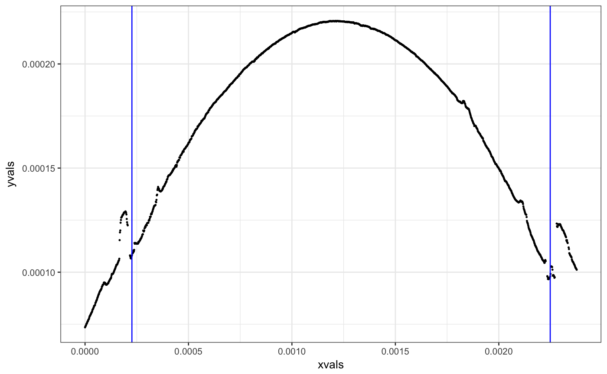

Compute a Chumbley test score
get_chumbley(y1, y2, window, reps = 3)
| window | width of the window (in indices) to consider for matching |
|---|---|
| reps | number of replicates to use in the evaluation |
| b1 | vector of equi-distant toolmark values |
| b2 | vector of equi-distant toolmark values |
Chumbley, L. S., Morris, M. D., Kreiser, M. J., Fisher, C., Craft, J., Genalo, L. J., Davis, S., Faden, D. and Kidd, J. (2010), Validation of Tool Mark Comparisons Obtained Using a Quantitative, Comparative, Statistical Algorithm. Journal of Forensic Sciences, 55: 953–961. doi:10.1111/j.1556-4029.2010.01424.x
library(dplyr) data(br411) b1 <- get_crosscut(x = 250, bullet=br411) b2 <- get_crosscut(x = 150, bullet = br411) b3 <- get_crosscut(x = 10, bullet=br411) b1.gr <- b1 %>% get_grooves(smoothfactor=30) b2.gr <- b2 %>% get_grooves() b3.gr <- b3 %>% get_grooves() # check that the grooves are actually found: b1.gr$plot#> Warning: Removed 17 rows containing missing values (geom_point).b2.gr$plot#> Warning: Removed 17 rows containing missing values (geom_point).# get signatures b1 <- fit_loess(b1, b1.gr)$data b2 <- fit_loess(b2, b2.gr)$data b3 <- fit_loess(b3, b3.gr)$data get_chumbley(b1$resid, b2$resid, window=150, reps=5)#> Error in get_chumbley(b1$resid, b2$resid, window = 150, reps = 5): could not find function "get_chumbley"get_chumbley(b1$resid, b2$resid, window=150, reps=5)#> Error in get_chumbley(b1$resid, b2$resid, window = 150, reps = 5): could not find function "get_chumbley"get_chumbley(b1$resid, b2$resid, window=50, reps=12)#> Error in get_chumbley(b1$resid, b2$resid, window = 50, reps = 12): could not find function "get_chumbley"